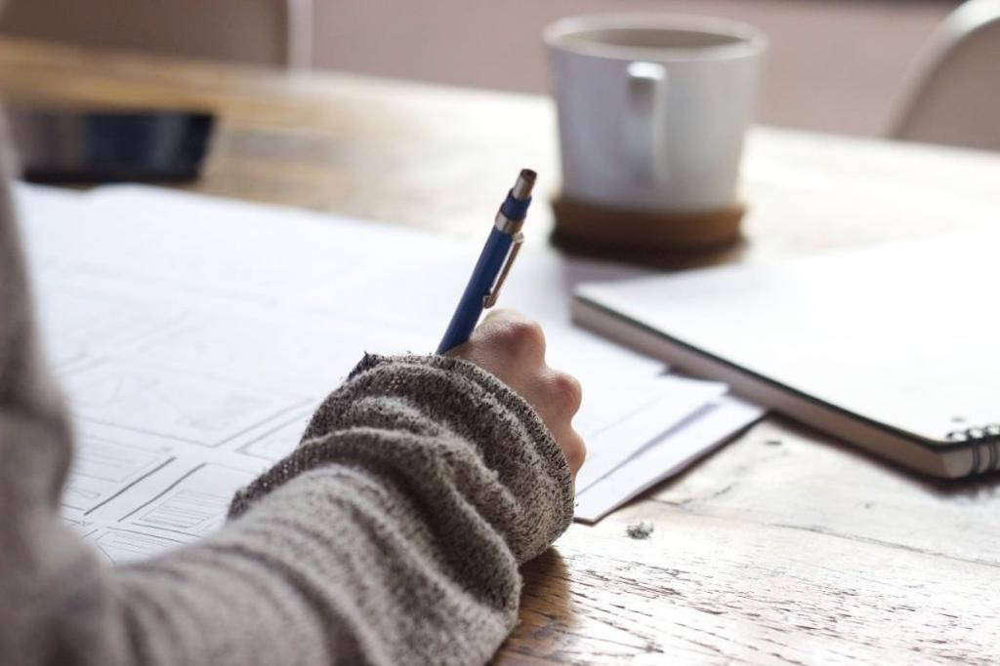

<ion-content [fullscreen]="true">
  <ion-header>
    <ion-toolbar color="secondary">
      <ion-buttons slot="start">
          <ion-menu-button auto-hide="false"></ion-menu-button>
        </ion-buttons>
      <ion-title>ENSIAS courses</ion-title>
    </ion-toolbar>
  </ion-header>


  <ion-content >
    <ion-grid>
        <ion-row>
            <ion-col size="12" size-sm>
                <ion-card *ngFor="let channel of mychannels">
                    <ion-card-header >
										<ion-item button lines="none" (click)="goTofilespages()">  </ion-item>

                      <ion-card-title>{{channel.canalName}}</ion-card-title>
										</ion-card-header>
                  </ion-card>
            </ion-col>
        </ion-row>
    </ion-grid>
    <ion-tabs>

      <ion-tab-bar slot="bottom">
        <ion-tab-button tab="profile">
          <ion-icon name="person-circle-outline"></ion-icon>
          <ion-label>Profile</ion-label>
        </ion-tab-button>

        <ion-tab-button tab="dashboard">
          <ion-icon name="school" color="secondary"></ion-icon>
          <ion-label>Canals</ion-label>
        </ion-tab-button>

        <ion-tab-button tab="settings">
          <ion-icon name="log-out-outline" ></ion-icon>
          <ion-label>Log out</ion-label>
        </ion-tab-button>
      </ion-tab-bar>

    </ion-tabs>

</ion-content>

</ion-content>
